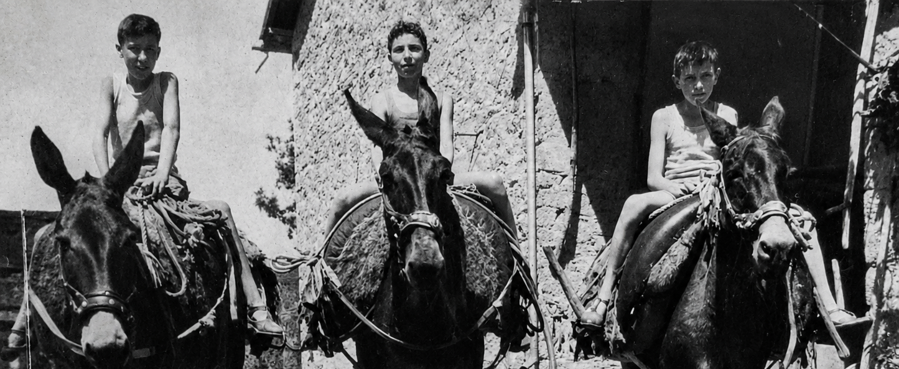

Memorie
Come eravamo
La vita quotidiana, i mestieri, il ritmo delle stagioni
nei racconti di chi ha vissuto la Rocchetta di un tempo
I racconti della vita di tutti i giorni: il lavoro nei campi, l'artigianato, le tradizioni, la solidarietà tra vicini. Testimonianze dirette di chi ha vissuto l'Appennino modenese quando il tempo scorreva al ritmo delle stagioni.
Una vita al ritmo delle stagioni
Inverno, primavera, estate, autunno: il ciclo infinito del lavoro contadino, dalla neve alla raccolta delle castagne. I mestieri artigianali, la canapa, le castagne, la solidarietà tra vicini.
Leggi la testimonianza →La dinastia dei Sandri
La storia della famiglia che ha dato il nome al borgo. Dal nonno Domenico sopravvissuto al colera del 1855, fino all'espansione del podere della Casa Nuova oltre i 100 ettari.
Leggi la testimonianza →